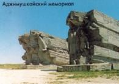
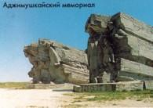
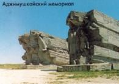

В летопись Великой Отечественной войны вошли подвиги защитников Аджимушкая, с мая по октябрь 1942 г. державших оборону в каменоломнях в тылу врага, героизм десантников Керченско-Феодосийской операции 1941 г. и Эльтигенской операции 1943 г. 11 апреля 1944 г. Керчь была освобождена. За время боёв в Керчи было уничтожено более 85 % зданий, освободителей встретили чуть более 30 жителей города из почти 100 тысяч жителей 1940 г. За героизм, мужество и заслуги населения и подвиги воинов в Великой Отечественной войне городу Керчи присвоено звание города-героя. В ноябре 1941 г. Керчь была оккупирована фашистскими войсками. В Аджимушкайских и Старокарантинских каменоломнях были созданы базы партизан. 30 декабря 1941 г. советские войска в ходе первой за всю войну наступательной десантной Керченско-Феодосийской операции освободили Керчь. Керченско-Феодосийская операция 1941г. была крупнейшей из морских десантных операций в Великой Отечественной войне. Всего полтора месяца хозяйничали оккупанты в первый раз, но последствия были чудовищными. "Багеровский ров" - здесь фашисты расстреляли 7 тысяч человек. Именно отсюда начала свою работу Советская комиссия по расследованию преступлений фашизма. Материалы этого расследования были представлены на Нюрнбергском процессе.
В течение февраля-апреля 1942г. войска Крымского фронта при поддержке Черноморского флота и Азовской военной флотилии вели наступательные бои. 19 мая 1942 г. наши войска оставили Керчь. Часть войск в составе сводного отряда полковника П.М. Ягунова опускается в Аджимушкайские каменоломни. В Малых каменоломнях подземный гарнизон возглавил старший лейтенант М.Г. Поважный. С мая до конца октября, сжигаемые жаждой, травимые газами, голодные, в сырости и холоде сражались воины гарнизона.
31 октября 1943 года началась Керченско-Эльтигенская десантная операция. В сорокадневном бою на Огненной земле Эльтигена более 60 воинов стали Героями Советского Союза. В ночь на 3 ноября начал высадку основной десант в районе Глейки-Жуковки-Опасного. Пять с половиной месяцев стоял здесь фронт. 58 воинов стали Героями Советского Союза. И лишь 11 апреля 1944 года город был полностью освобожден.
